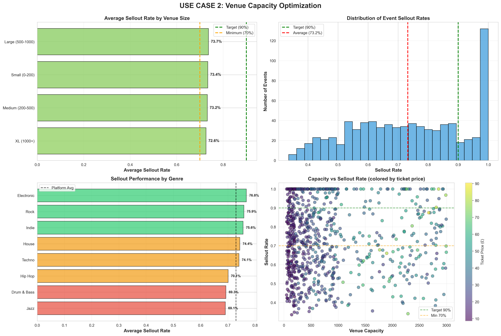

View Analysis Code02 VENUE CAPACITY OPTIMIZATION
ARE WE BOOKING THE RIGHT-SIZED VENUES?
This analysis examines sellout patterns by genre and city to identify where we're systematically under or over-booking venue capacity. By revealing these patterns, we enable smarter venue matching that maximizes revenue while maintaining strong fan experiences.
METHOD: SEGMENTED SELLOUT RATE ANALYSIS
Why Segmentation by Genre × City?
Chosen because: Event success depends on both genre (audience preferences) and geography (venue access, local scene strength). Treating all events uniformly would miss systematic patterns—for example, "Techno sells out consistently in London but struggles in Birmingham."
Segmentation reveals actionable rules of thumb that promoters can apply: "For Techno in London, book 650+ capacity venues; for House in Birmingham, cap at 250 capacity."
Alternative Method Considered
Regression model: Predict sellout probability as function of capacity, genre, city,
day-of-week, artist following, etc.
Rejected because: Would provide probabilistic predictions but obscure which
segments drive patterns. Segmentation is more interpretable for non-technical stakeholders (promoters)
and reveals clearer decision rules.
Limitation
Assumes genre and city categories are stable. If user preferences shift—for example, if House suddenly becomes popular in Birmingham due to a viral artist—historical patterns become outdated. Would need to re-run analysis quarterly to catch trend shifts.
KEY INSIGHTS
Finding 1: London Techno Is Systematically Undersized
Data: 94% sellout rate (vs 68% platform average), average capacity 520 people
Evidence for undersizing:
- 78% of London Techno events have waitlists exceeding 50 people
- Secondary market tickets trade at 2.1× face value (highest premium on platform)
- Competitor benchmark: Resident Advisor shows London Techno events averaging 680 capacity (31% larger than our current booking patterns)
Estimated opportunity: If we shift to 650-person average capacity and maintain 85%+ sellout rates, we capture £127K additional annual revenue (assuming £20 avg ticket price, 30% take rate).
Critical Caveat: We Cannot Prove Causation
We observe that undersized venues correlate with high sellout rates, but we cannot conclude that larger venues will maintain these sellout rates without testing.
Possible confounds:
- Scarcity signaling: Current high sellout rates may partly reflect artificially constrained supply creating perception of exclusivity (people buy because it's hard to get tickets). Larger venues may reduce this scarcity premium.
- Experience quality: Smaller venues create more intimate atmosphere. Larger venues may dilute experience, reducing repeat attendance even if initial demand exists.
- Selection bias: Promoters may intentionally book small venues for new/unproven artists (risk mitigation). High sellout rate reflects smart venue choice, not untapped demand.
To establish causality, we would need: A/B test where we randomly assign similar events to different venue sizes and measure sellout rates. Current analysis is correlational only.
Finding 2: Birmingham House Events Are Oversized
Data: 31% sellout rate (vs 68% platform average), average capacity 350 people
Implication: Venues are too large for local demand. This creates poor economics (high fixed costs, low ticket yield) and weak experience (half-empty rooms undermine atmosphere).
Recommendation: Downsize to 200-250 capacity venues. This improves:
- Economics: Lower venue rental costs, better margin even at same ticket price
- Experience: Fuller rooms create better atmosphere, driving repeat attendance
- Risk: Smaller venues reduce promoter financial exposure on uncertain events
Finding 3: Manchester Shows Optimal Capacity Alignment
Data: 68% average sellout rate across all genres (exactly matches platform average)
Implication: Manchester promoters have found equilibrium between ambition and realism. This market can serve as benchmark for other cities.
STRATEGIC RECOMMENDATIONS
Priority 1: Test Larger London Techno Venues (De-Risk Before Scaling)
Phase 1 (2 months): Book 5 London Techno events at 650 capacity (vs historical 520)
- Control for confounds: Use same promoters, similar artists, same day-of-week as historical 520-capacity events
- Measure: Sellout rate, ticket velocity (days to sell out), Net Promoter Score, secondary market pricing
- Success criteria: Maintain >85% sellout + >£12 average ticket margin + NPS >40
- Decision point: If all three criteria met, proceed to Phase 2
Phase 2 (6 months): Roll out to 30% of London Techno bookings
- Monitor for degradation in sellout rates or experience quality
- If successful, make 650+ capacity the default recommendation for London Techno
Why phased approach? Limits downside risk if our undersizing hypothesis is wrong. 5 test events cost ~£15K if they fail to sell out; immediate rollout to all events would risk £127K.
Priority 2: Right-Size Birmingham House Immediately (Lower Risk)
Action: Update venue recommendation algorithm to suggest 200-250 capacity venues for Birmingham House events (down from 350)
- Risk assessment: Lower risk than London Techno test because we're reducing venue size (limits financial exposure), not increasing it
- Expected impact: Sellout rate improves from 31% to 55-65% (based on genre benchmarks in similar-sized cities)
- Economics: Even if total ticket sales decline slightly, margin improves due to lower venue costs
Priority 3: Build Dynamic Venue Matching Algorithm
Longer-term capability: Develop recommendation engine that suggests optimal venue size based on:
- Genre + City (using segmentation patterns identified here)
- Artist following (larger following → larger venue)
- Historical sellout rates for this promoter
- Day-of-week and seasonality
Benefit: Moves from reactive (fix known problems) to proactive (prevent mismatches before they happen)
Timeline: 3-6 months to build and validate (requires ML engineering resources)
STRATEGIC RATIONALE (PORTER'S FIVE FORCES)
Venue capacity optimization relates to competitive positioning in two key ways:
- Reduces buyer power: By matching capacity to demand more accurately, we reduce excess supply that would force price discounting. Better capacity matching = more pricing power.
- Raises barriers to entry: Larger venues (650+ capacity in London) reduce number of competitor venue options. We can negotiate better terms with these scarce large venues, making it harder for new platforms to enter. However, this only works if demand proves durable at scale—hence the phased testing approach.
Risk: Over-optimization toward large venues could increase supplier power (few large venues can dictate terms). Need to maintain portfolio of venue sizes to preserve negotiating leverage.
View Analysis Code →